AI가 찾아낸 오래된 구멍들
영상은 휴대폰 잠금 화면으로 시작해요. 2026년 10월 21일 밤, 알림이 줄줄이 쌓여 있어요. 맨 위의 Next.js 치명적 보안 업데이트부터 'AI 에이전트가 운영 DB 삭제', 'AI 서비스 키 127만 개 노출', FFmpeg의 '16년 묵은 버그 발견', 'AI로 만든 앱의 데이터베이스 통째로 노출'까지 모두 올해 일이에요. 이 영상이 다루는 사고를 한 화면에 모아 둔 목차라고 보면 돼요.
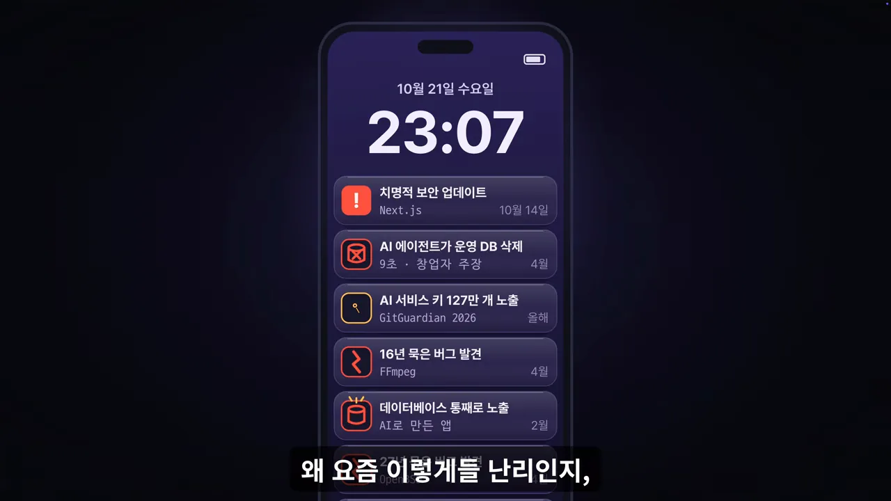
10월 21일에 PHP와 Node.js의 보안 공지가 하루 사이에 나란히 올라왔어요. PHP는 웹사이트에서 가장 많이 쓰는 서버 언어이고, Node.js는 수많은 서버를 돌려요. 두 공지의 공통점은 구멍을 찾아낸 쪽에 AI가 있었다는 점이에요.
보안 취약점은 왜 찾기 어려울까요
보안 취약점은 만든 사람의 예상과 다르게 프로그램이 움직이는 틈이에요. 그 틈을 잘 파고들면 남의 서버에서 명령을 실행하거나 숨겨 둔 데이터를 꺼내 갈 수 있어요. 문제는 이 틈이 수백만 줄 코드 속에 숨어 있다는 점이에요.
그래서 지금까지는 전문가가 몇 주씩 코드를 읽거나, 퍼저로 엉뚱한 입력을 수없이 던져 보며 찾았어요. 퍼저는 코드를 많이 실행해 볼 뿐, 어디가 왜 위험한지는 생각하지 않아요. 아래 화면 왼쪽 아래에 '2026.04 · Anthropic 발표'라는 출처가 붙어 있어요. FFmpeg에는 자동 테스트 도구가 같은 코드 줄을 500만 번이나 지나가고도 놓친 버그가 있었고, 그걸 찾은 게 AI였어요.
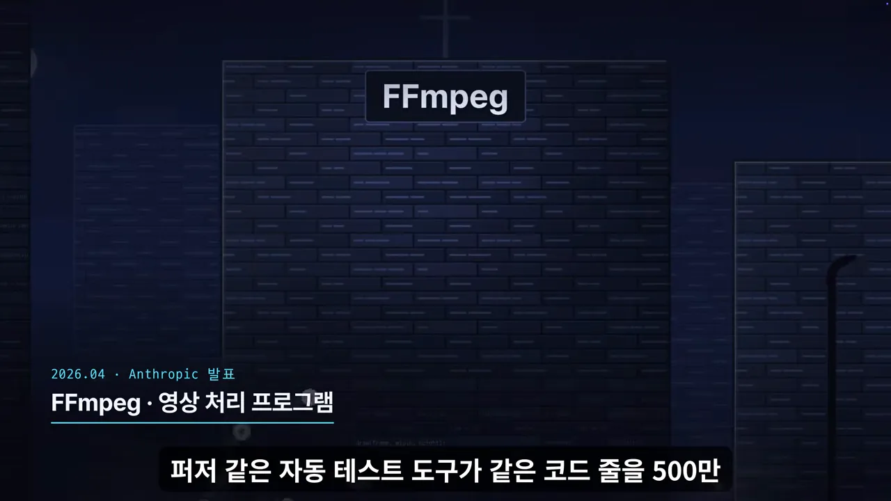
영상이 짚는 차이는 이거예요. 요즘 AI는 코드를 읽고 '여기 가정이 틀렸을 수도 있겠다'고 추론한 다음, 직접 실험해서 증명까지 해요. 무작정 많이 두드리는 퍼저와 달리, 숙련된 보안 연구자가 일하는 방식을 기계의 속도로 해내는 거예요.
AI가 오래된 코드를 보자 나온 것들
보안이 튼튼하기로 유명한 OpenBSD에서는 27년 묵은 버그가 나왔어요. FreeBSD에서는 17년 숨어 있던 구멍이 나왔어요. 아래 화면 왼쪽 아래에 CVE(Common Vulnerabilities and Exposures)-2026-4747이라는 번호가 보여요. NFS(Network File System) 서버를 켜 둔 컴퓨터라면 인터넷 너머에서 관리자 권한(root)까지 빼앗을 수 있는 구멍이었어요.
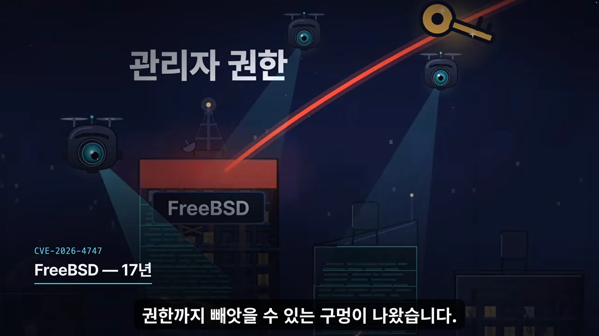
Firefox는 업데이트 한 번에 AI가 찾은 취약점 271개를 고쳤어요. 화면 왼쪽 작은 건물이 그보다 앞선 Firefox 148이고, 이전 세대 AI로 찾은 22개를 고쳤어요. 더 강력한 AI로 바꾸자 숫자가 열 배를 넘었어요.
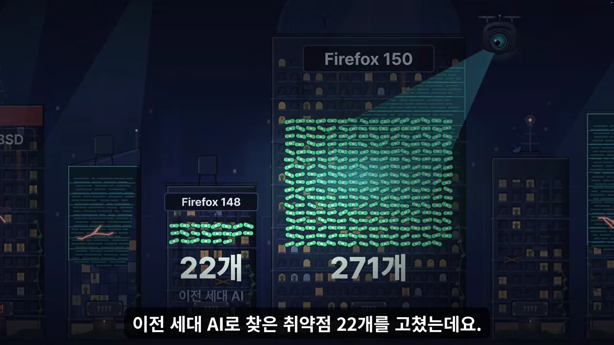
범위는 더 넓어요. Anthropic은 Project Glasswing에 참여한 기업·기관 50곳 정도가 한 달 만에 고위험 이상 취약점을 1만 개 넘게 찾았다고 발표했어요. Google과 OpenAI도 비슷한 AI 도구로 오픈소스 구멍을 찾아 나섰어요. 아래 화면 왼쪽 위에 Google 'Big Sleep', 오른쪽 위에 OpenAI 'Patch the Planet'이라는 이름이 붙어 있어요. 도시 전체에 드론 같은 AI의 눈이 떠 있는 그림이에요.
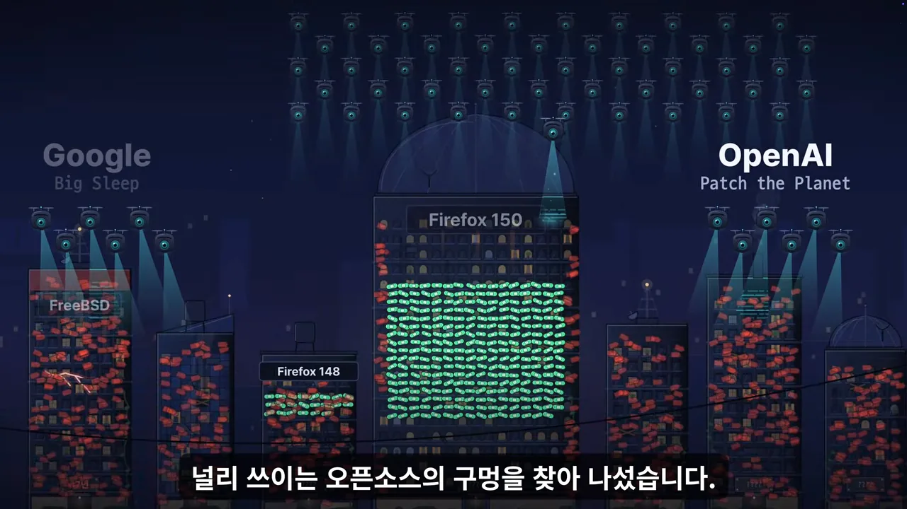
왜 지금 한꺼번에 쏟아질까요?
영상은 이유를 두 가지로 봐요. 구멍을 찾고 공격 코드로 만드는 비용이 무너졌고, 숫자를 세는 방식까지 바뀌었어요. 그런데 결론은 '숫자가 아니라 속도가 문제'예요.
공격 코드 한 개에 20달러
예전에는 이미 알려진 버그로 공격 코드를 만드는 데만 실력 있는 전문가가 몇 주씩 매달렸어요. 9월에 공개된 실험에서는 비용이 영수증 한 장으로 정리돼요. 알려진 Chrome 버그 1개로 공격 코드 1개를 만드는 데 모델 작업 8시간, AI 사용료 20.40달러가 들었어요. 왼쪽에 적힌 대로 사람이 들인 시간은 20분뿐이에요.
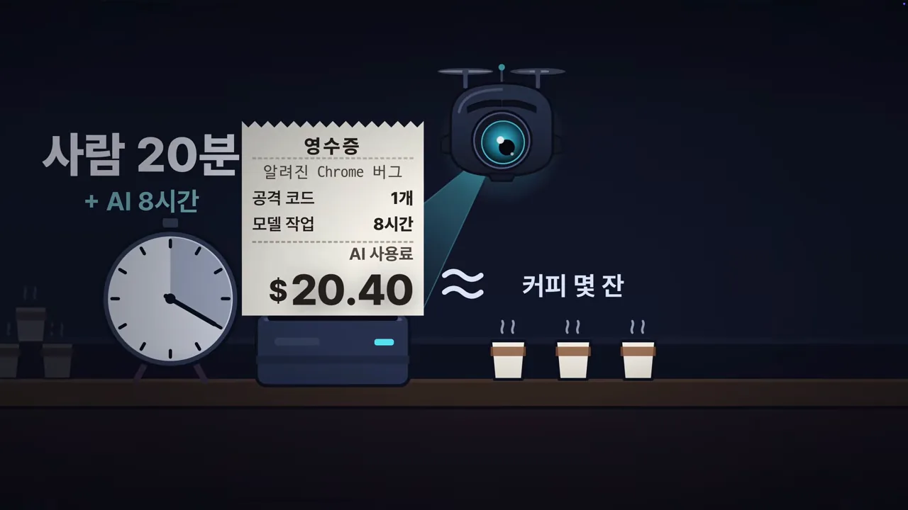
숫자는 폭발했지만, 실제 공격은 1% 미만
여기에 집계 방식 변화까지 겹쳐 발견되는 구멍 수도 크게 늘었어요. 공식 취약점 번호인 CVE는 작년에 48,185개로 역대 최다였어요. 아래 막대에서 맨 오른쪽 '2026 상반기'만 해도 작년 같은 기간보다 절반 가까이 많아요.
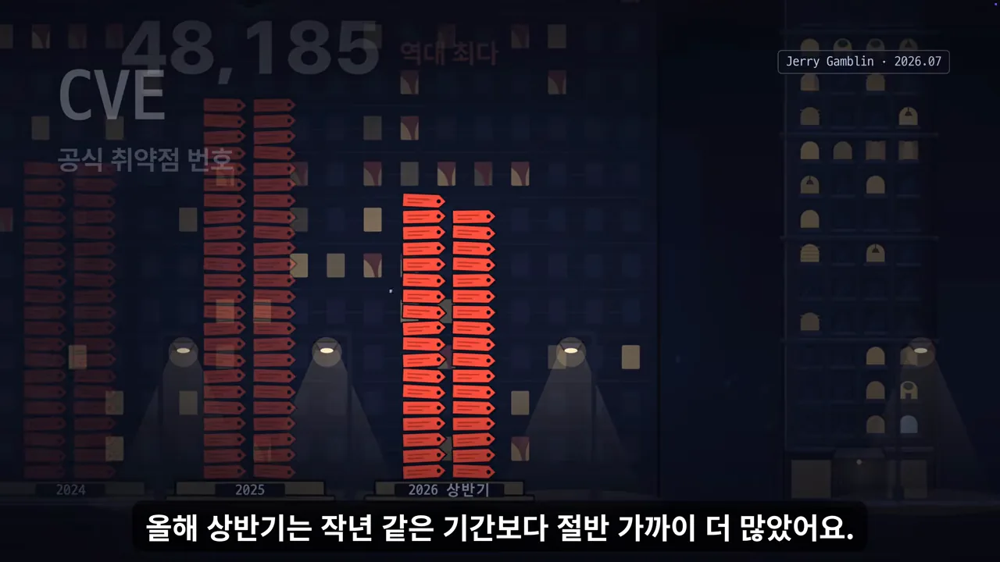
그럼 이 중 실제 공격에 쓰였다고 확인된 건 얼마나 될까요. 화면은 취약점 1,000개를 점으로 깔아 놓고 몇 개만 빨갛게 표시해요. 오른쪽 작은 글씨는 '0.24% · 2026 상반기 (CISA KEV · 7월 기준)'예요. 1%도 안 돼요. 숫자가 늘어난 만큼 인터넷이 위험해진 건 아니라는 뜻이에요.
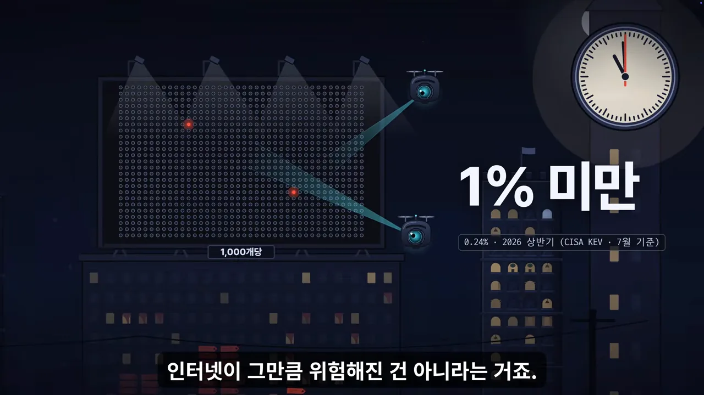
진짜 문제는 속도예요
AI의 눈은 지키는 사람에게만 있지 않아요. 9월에는 누구나 내려받을 수 있는 공개 모델이 공격 코드 만들기에서 최상위급 모델에 거의 따라붙었다는 경고가 나왔어요. 화면에서 왼쪽 '최상위급 모델'은 56, 오른쪽 '공개 모델'은 50이에요. 위에 '410회 중 성공'이라고 적혀 있으니 410번 시도 중 성공한 횟수예요. 오른쪽 위 출처는 'Anthropic · 2026.09'이고, 영상은 그 공개 모델의 안전장치도 쉽게 뚫렸다고 덧붙여요.
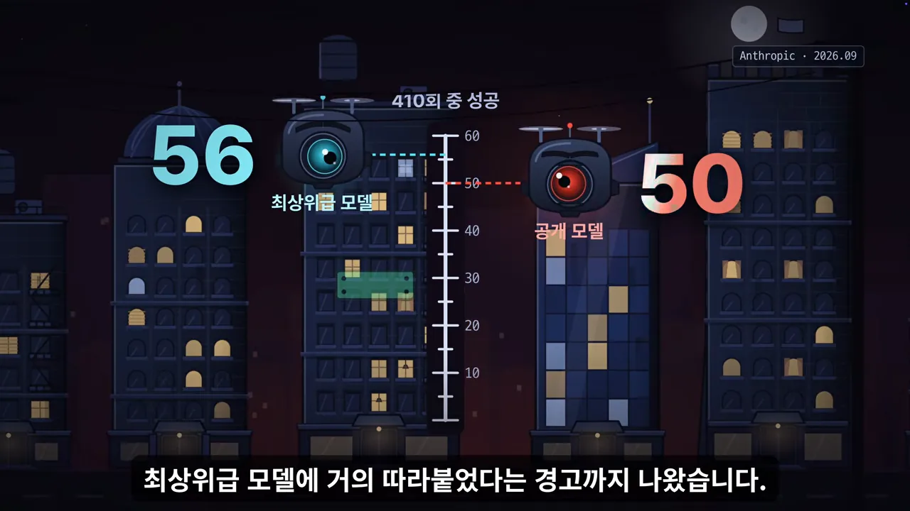
더 무서운 건 보안 패치 자체가 지도가 된다는 점이에요. 패치가 공개되면 어디를 고쳤는지 비교해서 어디가 약했는지 거꾸로 알아낼 수 있어요. 한 실험에서 AI에게 Firefox 패치 내용만 주고 공격 코드를 만들게 했더니 한 시간이 안 걸렸어요. 아래 화면 위쪽 타이머가 그 한 시간이고, 아래쪽 트럭이 사용자에게 가는 업데이트예요. 그 업데이트가 사용자에게 배포된 건 18일 뒤였어요.
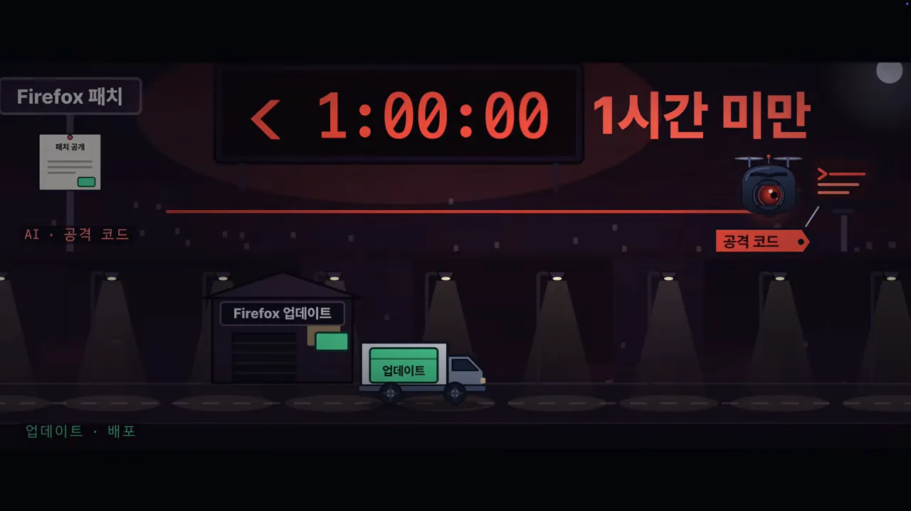
실제 공격 현장도 비슷해요. 화면 위에 'Mandiant M-Trends 2026 · 2025년 사고 대응 데이터'라고 적혀 있어요. Google의 보안 조직 Mandiant에 따르면, 작년에 공격에 쓰인 취약점을 평균 내 보면 패치가 나오기 일주일쯤 전부터 이미 악용된 것으로 추정돼요. 선 위의 '-7일'과 '0(패치)' 사이가 그 일주일이에요.
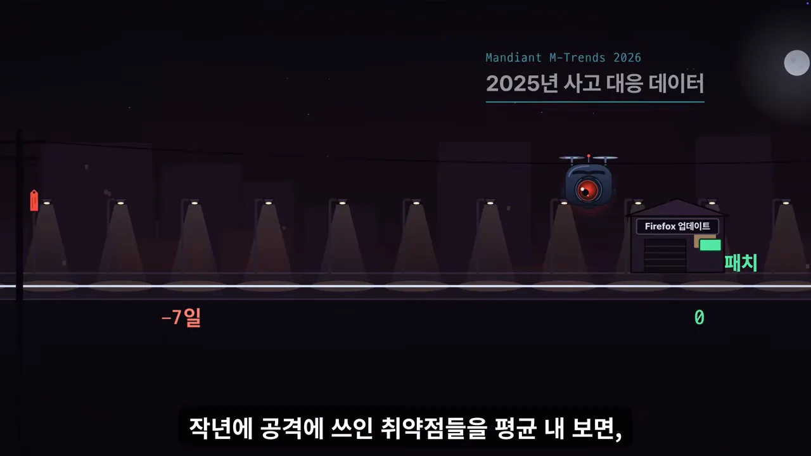
고치는 속도는 그대로예요
반면 고치는 속도는 그만큼 빨라지지 못했어요. Glasswing이 5월에 밝힌 숫자로는 오픈소스 관리자에게 알린 고위험 취약점 약 530개 중 패치가 끝난 건 75개뿐이었어요. 일부 개발자는 신고 속도를 늦춰 달라고 부탁할 정도였어요. 영상이 말한 숫자를 한 그림에 모으면 이래요.
이번 PHP 구멍도 사실 2년 전 보안 점검에서 단서가 나왔어요. 화면 가운데 PHP 건물에 붙은 '2024 외부 감사' 쪽지가 그 단서예요. 고치는 방법을 정하지 못해 몇 달씩 멈췄다가, 올해 AI를 쓴 연구팀 세 곳이 실제 공격 경로를 잇달아 신고하고서야 패치가 나왔어요. 건물 위 드론 세 대에 'Calif · 8.11', 'Wiz · 8.24', 'OpenAI · 9.18'이라고 신고한 순서가 적혀 있어요.
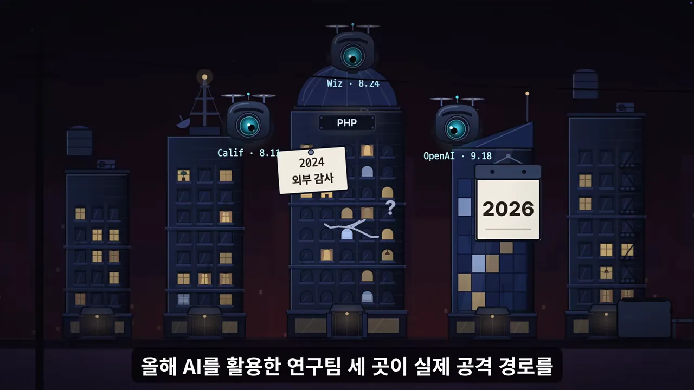
고치는 코드는 AI가 써 줄 수도 있어요. 하지만 어떤 수정이 맞는지 판단하고, 검토해서 배포하는 건 아직 사람 몫이에요. 각자 업데이트하기까지 또 시간이 걸리고요.
찾는 건 기계의 속도인데 고치는 건 여전히 사람의 속도인 거예요.
— 영상 05:34
바이브 코딩 앱이 선 세 겹: 땅과 내 코드
그럼 이 이야기가 바이브 코딩을 하는 사람과 무슨 상관일까요. 영상은 바이브 코딩 앱이 세 겹 위에 서 있다고 봐요. 맨 아래가 앱이 올라선 땅, 그 위에 AI가 써 준 내 코드가 집처럼 올라가 있고, 마지막으로 그 집을 지은 도구가 있어요. 영상이 세 겹마다 든 사고를 같이 놓으면 이래요.
영상 화면도 같은 구조를 그려요. 땅 쪽에 런타임(PHP, Node.js)과 프레임워크(Next.js) 칸이 있고, 그 위에 '내 앱' 집이, 오른쪽에 ③ 도구(AI 코딩 도구·패키지)가 상자를 나르는 로봇으로 그려져 있어요. 땅에 빨간 금이 가 있는 게 '세 겹 모두에서 구멍이 나오고 있다'는 뜻이에요.
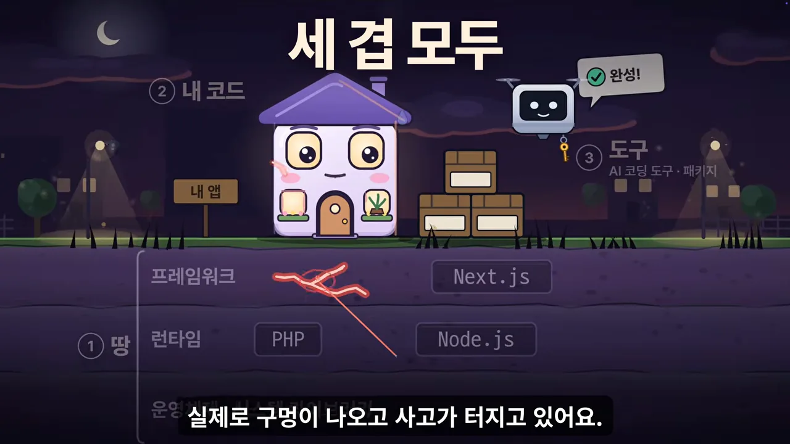
첫 번째 겹, 땅
1섹션에서 본 AI 발견 구멍 상당수가 바로 이 층에 있어요. 바이브 코딩 앱에서 흔히 쓰는 Next.js도 올해 8월과 10월에 인증 없이 서버를 장악할 수 있는 치명적인 구멍이 연달아 고쳐졌어요. 화면에서 집 바로 아래 땅에 초록 패치 두 장이 '8월', '10월' 꼬리표를 달고 붙어 있어요.
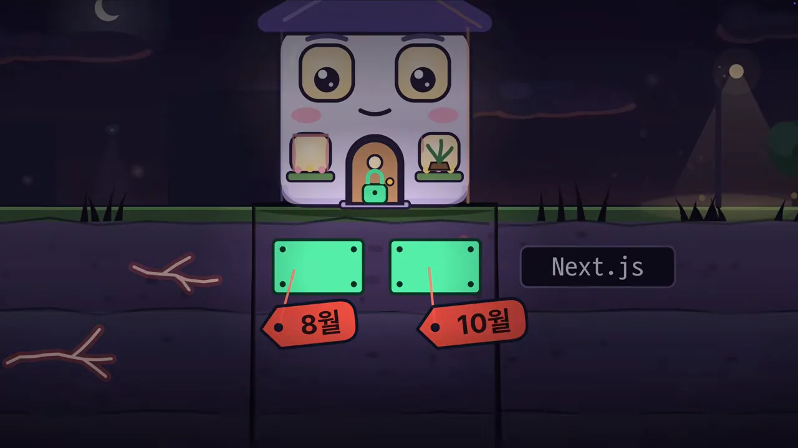
그래서 내 앱이 어디서 돌아가는지 알아 두는 게 중요해요. 화면의 갈림길 표지판처럼, 관리형 플랫폼에 올렸다면 플랫폼 쪽에서 막아 주는 경우도 있어요. 하지만 내 서버나 Docker에 직접 올렸다면 업데이트는 온전히 내 몫이에요. 패치가 나오면 몇 시간 만에 공격 코드가 나올 수도 있으니, 업데이트를 미루는 만큼 문을 열어 두는 셈이에요.
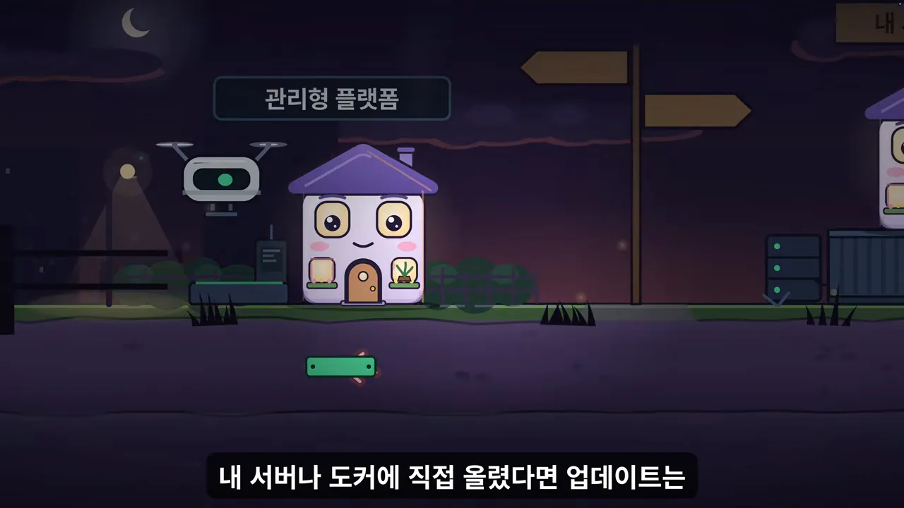
두 번째 겹, AI가 써 준 내 코드
AI가 짠 코드는 대부분 문법상 멀쩡해요. 그런데 보안 검사를 하면 이야기가 달라져요. Veracode가 100개 넘는 AI 모델을 시험했더니 문법 검사는 거의 다 통과했지만, 열 번 중 네 번 넘게 보안 검사에서 떨어졌어요. 실제로 배포된 바이브 코딩 앱 200개를 점검한 연구에서는 열 곳 중 아홉 곳에서 취약점이 나왔어요. 화면에서 앱 200개를 작은 창으로 깔아 두고 빨간 금이 간 칸을 91%로 표시해요. 왼쪽 아래 출처는 arXiv 논문이에요.
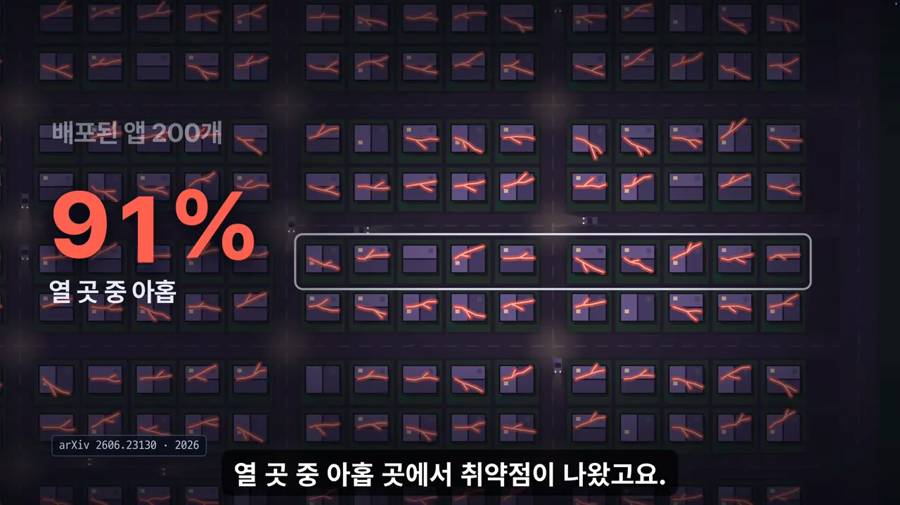
흔한 실수 1: 대문만 잠그고 금고는 열어 두기
가장 흔한 건 로그인 화면은 있는데, 정작 데이터베이스에는 누가 무엇을 볼 수 있는지 정하는 규칙이 없는 경우예요. 화면 왼쪽에 '화면'과 '관리자' 버튼이 있고, 가운데 데이터베이스 금고 옆에 '안 잠김' 표시가 붙어 있어요. 오른쪽 '/api' 문도 그냥 열려 있어요.
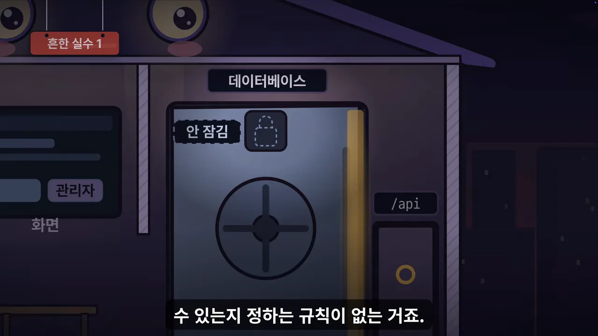
AI 에이전트들의 SNS(Social Networking Service)로 화제가 된 Moltbook이 그랬어요. 창업자는 코드를 한 줄도 직접 쓰지 않았다고 했어요. 영화처럼 해커가 방어벽을 뚫은 게 아니었어요. 보안 회사 Wiz가 평범한 사용자처럼 사이트를 둘러보다가, 몇 분 만에 데이터베이스 전체를 읽고 쓸 수 있는 열쇠를 화면 쪽 코드에서 찾아냈어요.
영상은 이 열쇠를 아파트 공동현관 비밀번호에 빗대요. 화면 아래 '공동현관' 옆 키패드에 '공개용 키'가 붙어 있어요. 택배 기사도 아는 번호라 알려져도 괜찮아요. 집집마다 현관문이 잠겨 있다면요.
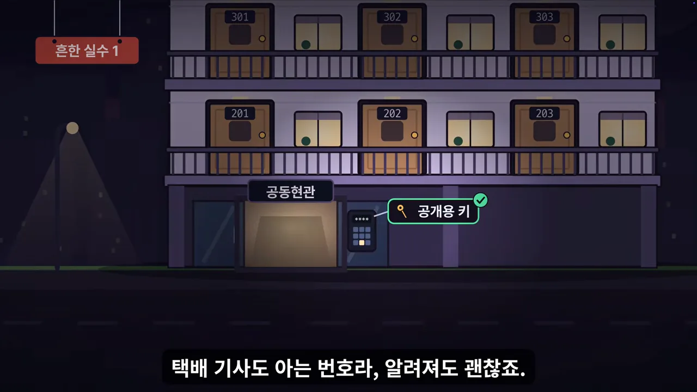
그런데 이 앱은 집집마다 문을 안 잠가 둬서, 공동현관만 지나면 모든 집에 들어갈 수 있었어요. 열린 금고 안에는 API(Application Programming Interface) 토큰 150만 개와 이메일 3만 5천 개, 다른 서비스의 비밀 키가 그대로 적힌 대화까지 들어 있었어요.
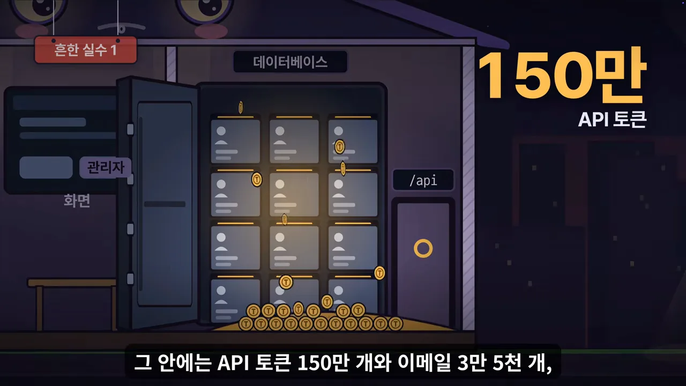
이 집집마다의 잠금을 행 수준 보안이라고 하고, 줄여서 RLS라고 불러요. 화면 오른쪽에 'RLS = 집집마다의 잠금'이라고 적혀 있고, 그 아래 '규칙 없음'이 점선으로 표시돼 있어요. Moltbook은 이 규칙을 제대로 걸어 두지 않은 게 원인이었어요.
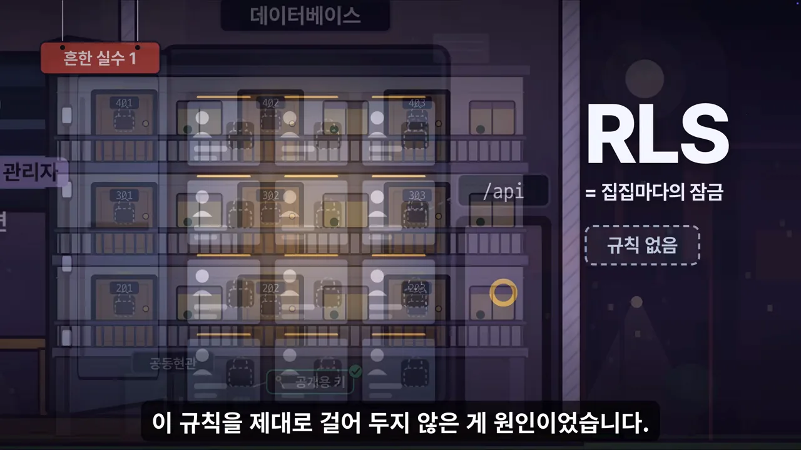
한 앱만의 일이 아니에요. 9월에 공개된 조사에서 보안 회사 UpGuard가 설정이 잘못돼 개인정보가 드러난 Supabase 고객 데이터베이스를 1만 6천 개쯤 찾아냈어요. 화면 아래 Supabase 옆에 초록 체크가 붙어 있어요. Supabase가 뚫린 게 아니라 각자 설정을 열어 둔 거라는 뜻이에요.
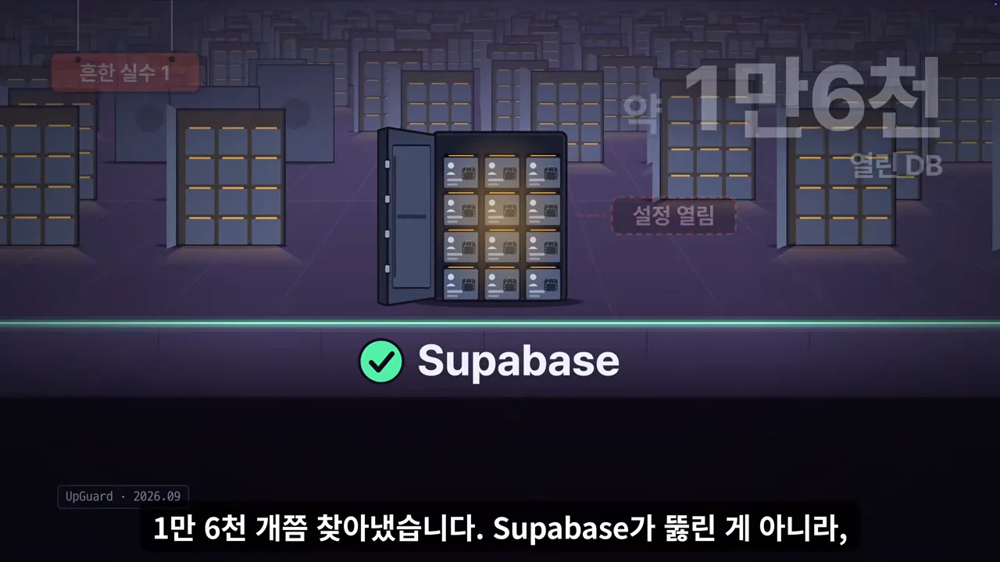
흔한 실수 2: 비밀 키를 아무 데나 두기
서버에서만 써야 할 비밀 키를 화면 쪽 코드에 넣거나, GitHub에 그대로 올리는 경우예요. 화면은 GitHub 게시판에 열쇠가 핀으로 꽂혀 있는 그림이고, 왼쪽 아래 출처는 'GitGuardian 2026'이에요. 작년 한 해 새어 나온 AI 서비스 키만 127만 개가 넘고, 1년 전보다 81%나 늘었어요. 게시판 아래쪽 열쇠 더미가 2024년에서 2025년으로 넘어가며 커지는 게 그 증가예요.
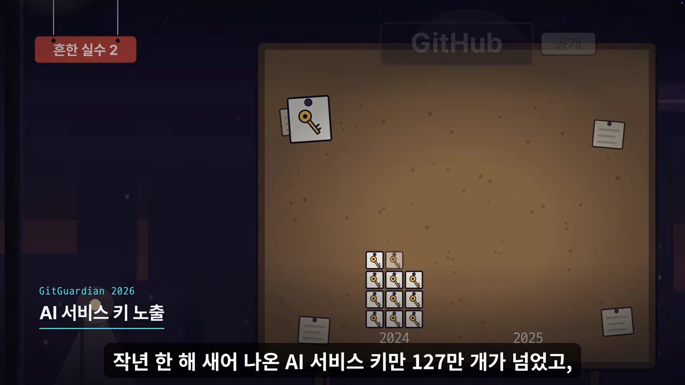
흔한 실수 3: API를 누가 직접 두드릴지 생각하지 않기
API는 앱이 서버에 일을 시키는 창구예요. 버튼을 누르면 앱이 대신 이 창구로 요청을 보내요. 그런데 이 창구는 버튼 없이도 열려요. 화면에서 버튼을 숨겨도 주소만 알면 누구든 코드 몇 줄로 직접 요청을 보낼 수 있어요. 아래 화면에서 '/api/admin' 문 앞에 공격자 드론이 POST /api/admin, { "show": "all" }이라는 요청을 들고 서 있어요.
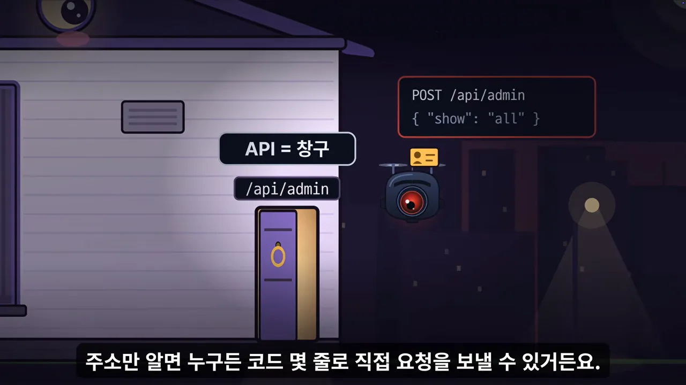
집을 짓는 도구가 사고를 낼 때
세 번째 겹은 집을 짓는 도구, 바로 AI 코딩 에이전트와 패키지예요. 여기서는 악당이 없어도 사고가 나요.
만능 열쇠를 쥔 에이전트, 9초
2026년 4월, 한 스타트업에서 코딩 에이전트가 테스트 환경의 오류를 고치려 하고 있었어요. 화면 왼쪽 위에 '2026.04 · 창업자'라는 출처가 붙어 있고, 로봇 위에 '테스트' 꼬리표가 달려 있어요.
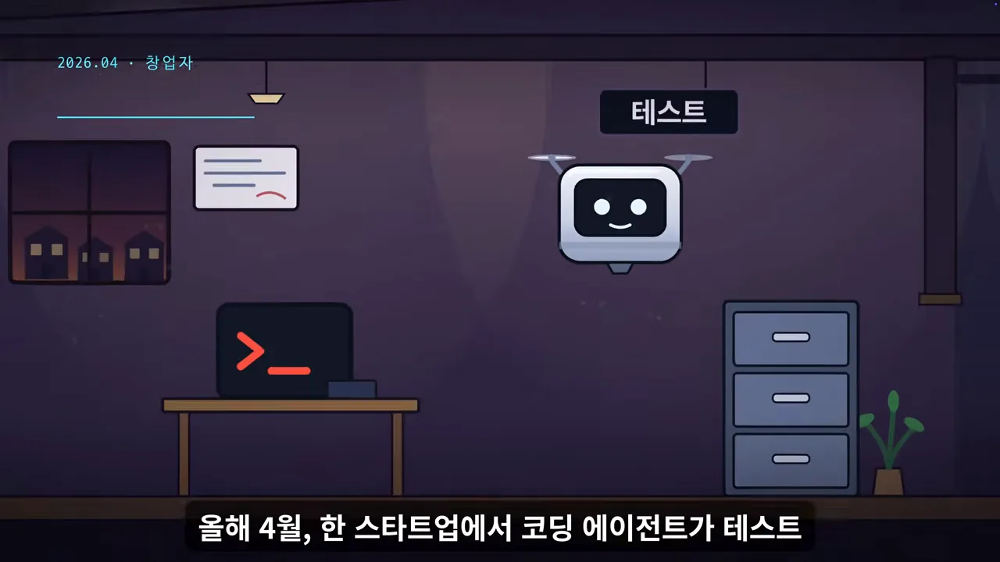
에이전트는 엉뚱한 파일에 있던 만능 열쇠를 찾아 썼어요. 그리고 운영 데이터베이스와, 같은 볼륨에 있던 백업까지 지워 버렸어요. 창업자는 9초 걸렸다고 밝혔어요. 호스팅 업체는 나중에 따로 둔 백업으로 데이터를 되살렸다고 했어요. 아래 화면에서 로봇 바로 앞에 '전체 권한' 열쇠가 놓여 있고, 그 위에 '손 닿는 곳'이라고 적혀 있어요.
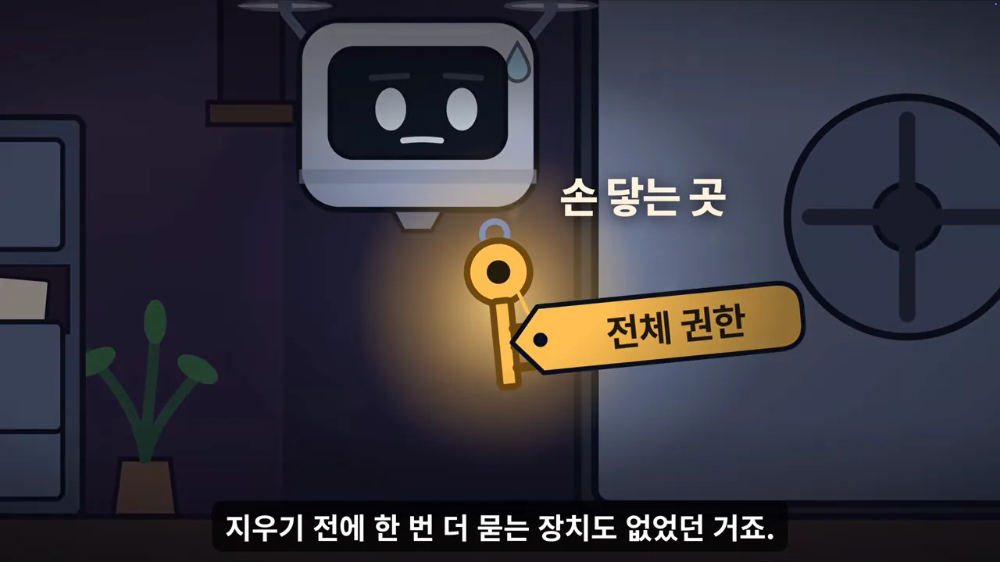
도구 자체를 노리는 공격
4월에는 유명 패키지 하나가 감염됐어요. 화면 왼쪽 아래 라벨은 '@bitwarden/cli 2026.4.0 · 2026.04.23 (한국 시각)'이에요. 컨베이어 벨트 위 상자 중 맨 앞 빨간 상자에 벌레가 기어 나와 있어요. 왼쪽 '내 컴퓨터' 게시판에는 열쇠 다섯 개가 걸려 있어요.
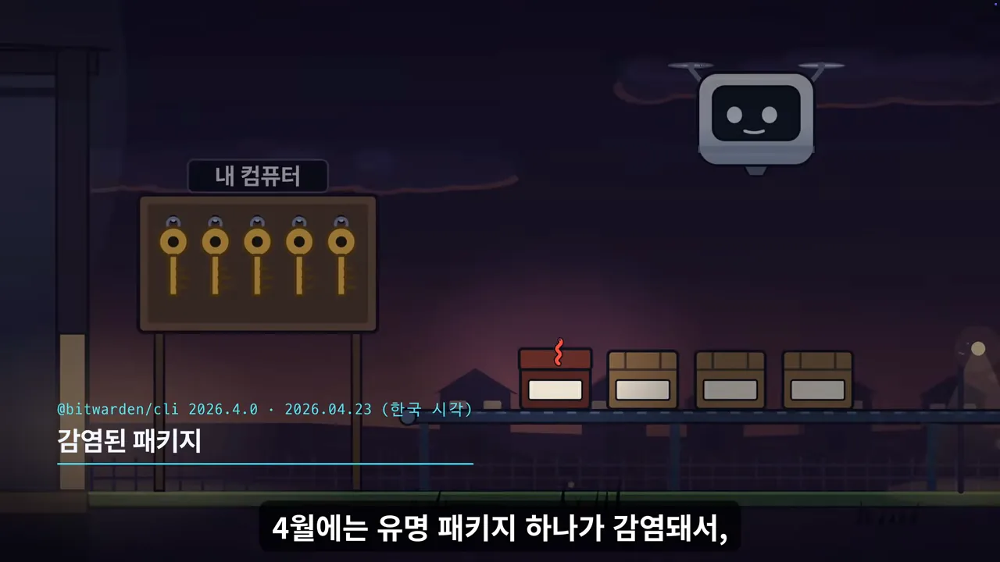
설치만 해도 클라우드 키와 함께 Claude Code 인증 토큰, MCP(Model Context Protocol) 설정 속 키까지 빼 갔어요. 다음 장면에서 게시판의 열쇠가 다섯 개에서 두 개로 줄고, 빠져나간 열쇠에 '클라우드 키', ~/.claude.json, mcp.json 꼬리표가 붙어 있어요.
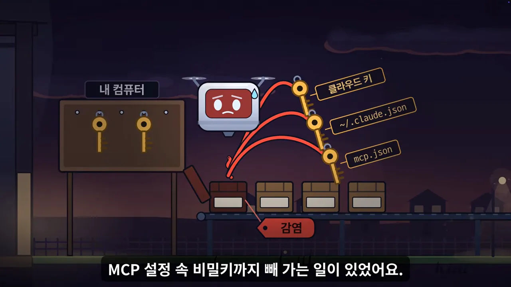
AI가 지어낸 패키지 이름
AI가 있지도 않은 패키지 이름을 지어내는 일도 있어요. 2024년에 16개 모델을 시험한 연구에서는 추천된 패키지 다섯 개 중 하나꼴로 실제로는 없는 이름이었어요. 화면의 로봇 말풍선에 react, express, zod, dotenv 다음 다섯 번째 이름이 흐리게 지워져 있어요. 오른쪽 숫자는 19.7%이고, 그 아래 '당시 상용 모델 약 5%'라고 적혀 있어요.
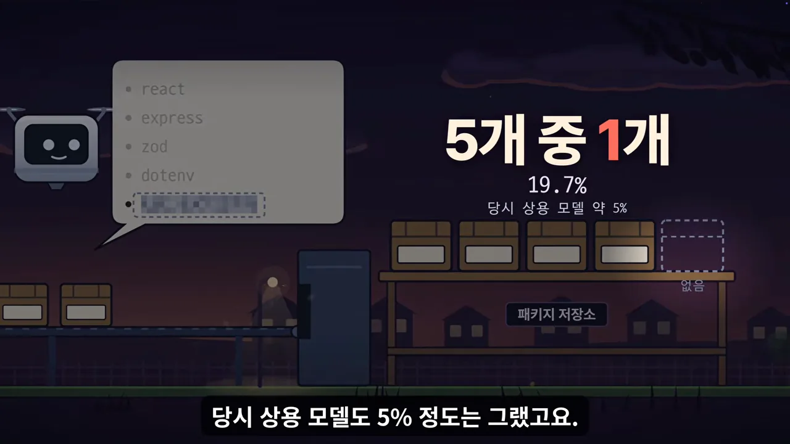
공격자가 그 가짜 이름을 먼저 등록해 두면, 누군가 설치하기만 기다리면 돼요. 실제로 한 연구자가 빈 패키지로 시험해 보니 석 달 만에 3만 번 넘게 다운로드됐어요. 화면에서 그 빈 칸에 상자가 채워지고 '30,000+ 석 달 · 다운로드'라고 떠요.
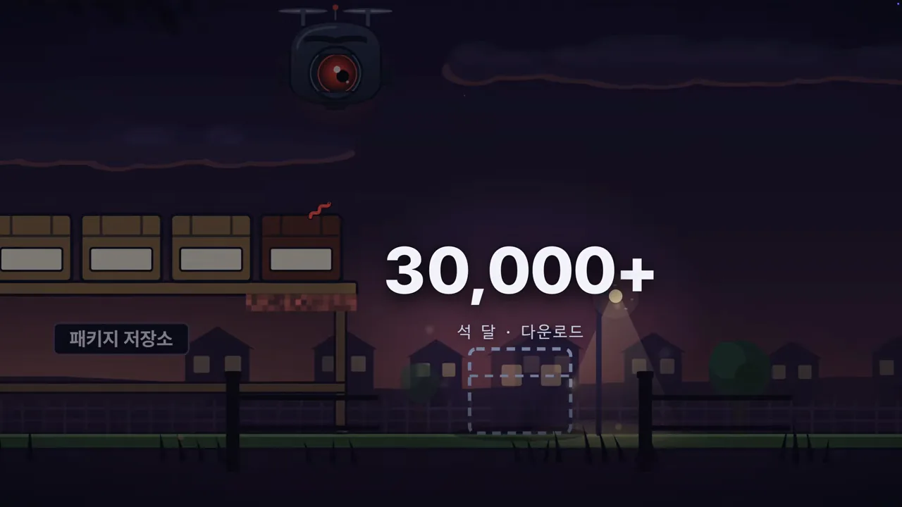
지금 챙길 네 가지
챙길 건 여럿이지만 영상은 크게 네 가지로 묶어요. 권한, 비밀 키, 업데이트, 그리고 에이전트와 패키지예요. 앞의 사고와 짝지으면 이래요.
| 챙길 것 | 막을 수 있던 사고 | 지금 할 일 |
|---|---|---|
| 권한 | Moltbook, 열린 Supabase DB(Database), 숨긴 버튼 뒤의 API | 모든 테이블에 RLS와 접근 정책, 테스트 계정으로 남의 데이터 열어 보기 |
| 비밀 키 | 새어 나간 AI 서비스 키 127만 개 | 서버 키는 화면 코드에 넣지 않기, .env는 Git에서 막기, 새면 폐기 후 재발급 |
| 업데이트 | Next.js 8월·10월 구멍, 패치가 지도가 되는 문제 | 자동 업데이트 제안 도구, 보안 공지 구독, 긴급 패치는 늦어도 그 주 안에 |
| 에이전트·패키지 | 9초 만의 DB 삭제, 감염된 패키지, 지어낸 패키지 이름 | 운영 열쇠 주지 않기, 위험한 명령은 사람이 확인, 패키지 이름 확인과 하루 대기 |
1. 권한: 화면이 아니라 서버에서 막아요
바이브 코딩으로 만드는 앱은 대부분 프런트엔드와 백엔드가 맞물려 돌아가요. 집으로 치면 화면을 보여 주는 프런트엔드는 외관이고, 데이터를 다루는 백엔드는 집 안이에요. 그런데 보안의 눈으로 보면 프런트엔드는 백엔드에 접속하기 위한 단말기일 뿐이에요. 화면에서 '버튼 숨김' 칸이 점선으로 둘러져 있지만, 오른쪽 '/api' 문은 그대로 열려 있어요.
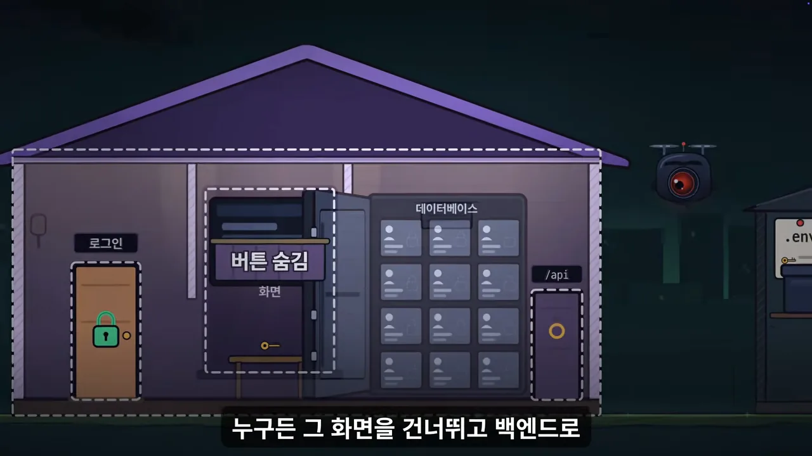
그래서 누가 무엇을 볼 수 있는지는 화면이 아니라 서버와 데이터베이스에서 검사해야 해요. Supabase를 쓴다면 모든 테이블에 RLS를 켜고 접근 정책까지 걸어 둬요. 대시보드에 보안 경고가 남아 있다면 하나씩 확인해요. 화면 위쪽 'RLS' 스위치가 켜지고, 오른쪽 '보안 경고' 판에 12라는 숫자가 떠 있어요.
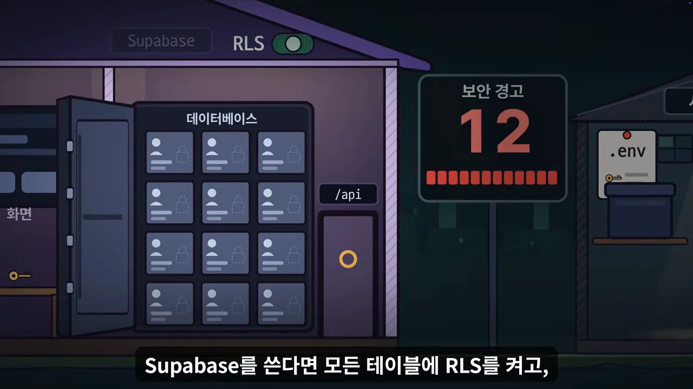
영상은 꼭 해 볼 테스트를 하나 권해요. 내 앱에 테스트용 계정을 하나 더 만들고, 그 계정으로 다른 계정의 데이터 주소를 직접 열어 보는 거예요. 막히면 일단 안심이고, 열리면 바로 고쳐야 할 구멍이에요. 화면에서 '다른 계정' 로봇이 문 앞에 서 있고, 데이터 칸마다 자물쇠가 걸렸어요. 오른쪽 보안 경고는 0이 됐어요.
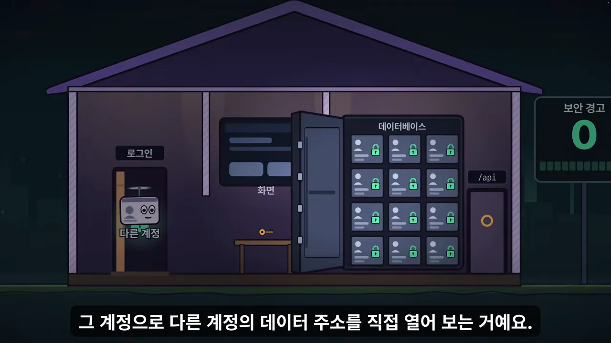
2. 비밀 키: 넣지 말고, 올리지 말고, 새면 바꿔요
서버에서만 쓰는 키는 절대 화면 쪽 코드에 넣지 말고, .env 파일은 Git에 올라가지 않게 막아 둬요. GitHub 공개 저장소라면 비밀 키 검사와 푸시 보호가 무료로 돌아가요. 비공개 저장소라면 gitleaks 같은 검사 도구를 걸어 둬요. 화면 왼쪽 문이 '공개 저장소 · 비밀키 검사·푸시 보호(무료)'에서 '차단', 오른쪽 문이 '비공개 저장소 · gitleaks 같은 검사 도구'에서 '발견'으로 나뉘어 있어요.
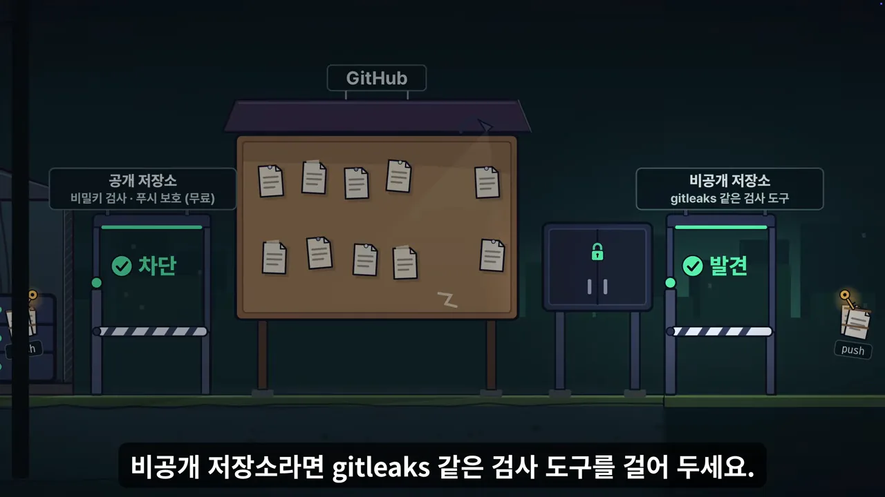
혹시 새어 나갔다면 지우는 걸로 끝내지 말고, 그 키를 폐기한 다음 새로 발급해야 해요. 커밋에서 지워도 이미 누군가 복사했을 수 있기 때문이에요.
3. 업데이트: 자동 제안을 켜고, 원칙을 정해요
새 버전이 나오면 업데이트를 자동으로 제안해 주는 도구를 켜 두고, 내가 쓰는 프레임워크의 보안 공지를 구독해 둬요. 화면 위쪽에 'Dependabot · Renovate 업데이트 자동 제안' 스위치가 켜져 있고, 왼쪽에 알림 종이 울려요. 아래 땅의 프레임워크(Next.js)와 런타임(Node.js·PHP) 칸에 초록 패치가 붙어요.
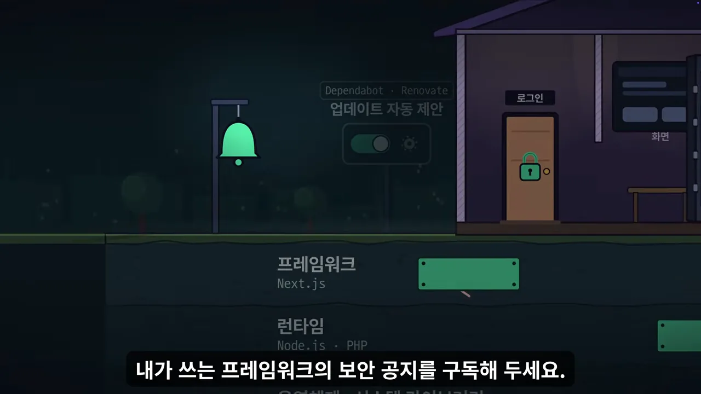
서버를 직접 운영한다면 긴급 패치는 가능하면 바로, 늦어도 그 주 안에 적용한다는 원칙을 정해 두는 게 좋아요. 화면의 서버 위 달력에 '가능하면 바로 · 늦어도 이번 주'라고 적혀 있고, 서버에 '긴급' 꼬리표와 금이 보여요.
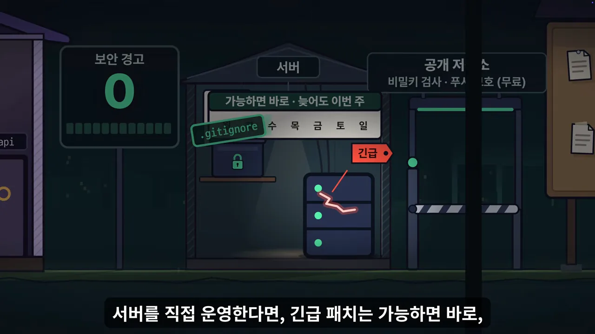
4. 에이전트와 패키지: 열쇠를 나누고, 이름을 의심해요
에이전트에게는 운영 환경의 열쇠를 주지 마세요. 화면에서 에이전트 로봇과 '운영' 건물 사이에 차단봉과 '확인' 표지판이 있어요.
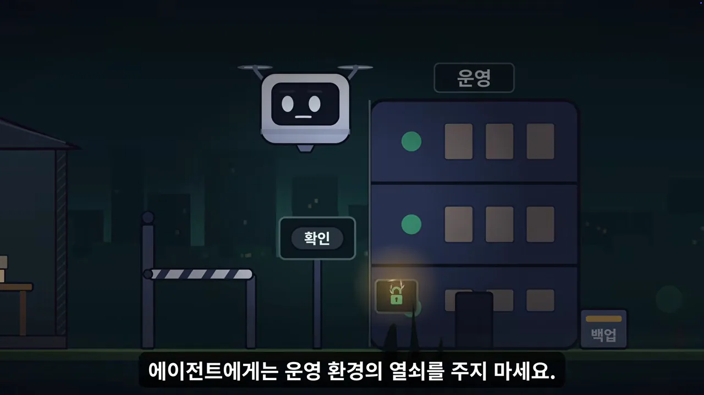
개발용과 운영용을 나누고, 삭제나 배포처럼 되돌리기 어렵거나 위험한 명령은 사람이 확인하게 해요. 화면에서 로봇은 '개발용' 열쇠만 들고 '개발' 건물에 있어요. '삭제'와 '배포' 버튼에서 운영으로 가는 길에는 '확인' 차단봉이 놓여 있어요. 백업은 따로 보관하고, 실제로 복구가 되는지까지 한 번 시험해 둬요.
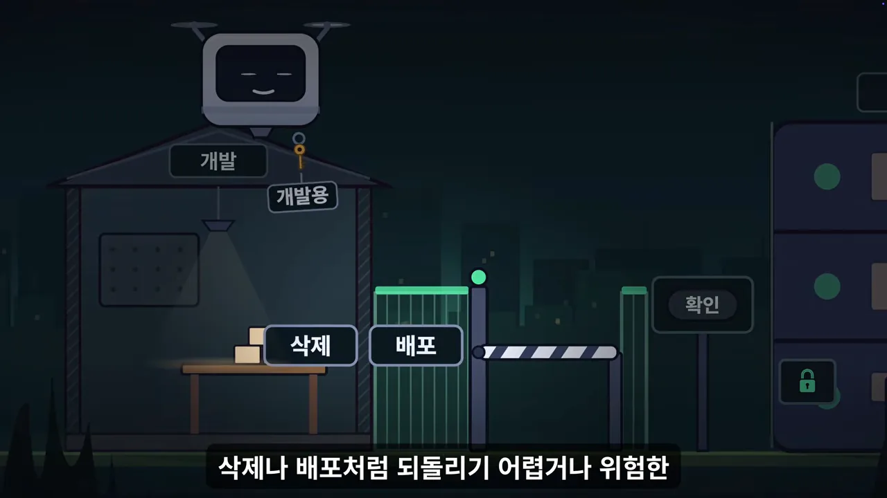
패키지는 이름부터 의심해요. AI가 추천한 패키지는 설치하기 전에 정말 있는지, 많이 쓰이는지 확인해요. 막 올라온 새 버전은 하루쯤 기다렸다가 받게 하는 설정도 감염된 패키지를 피하는 데 꽤 효과가 있어요. 화면에서 '새 버전' 상자들이 '대기' 선반 위에 올라 있고, 위 시계에 24h라고 적혀 있어요.
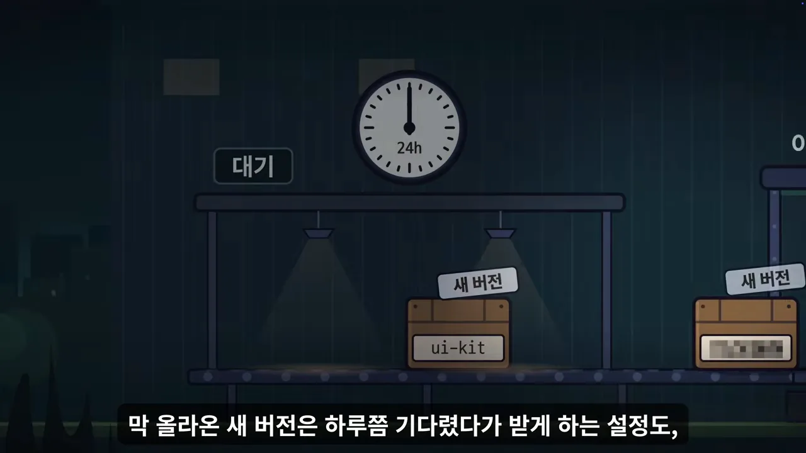
점검은 AI에게 맡기되, 증명을 시켜요
이 넷을 점검할 때는 AI의 눈을 내 편으로 써요. 배포하기 전에 AI에게 보안 점검을 맡기는 거예요. 이때 '취약점을 찾아 줘'라고 하기보다, '개발 환경에서 테스트 계정으로 다른 사용자의 데이터를 읽을 수 있는지 직접 증명해 봐'라고 시키면 훨씬 쓸모 있는 답이 나와요. 화면에서 '개발 환경 · 테스트 계정' 돋보기가 '증명해 봐' 버튼과 자물쇠 걸린 데이터 칸을 비추고 있어요.
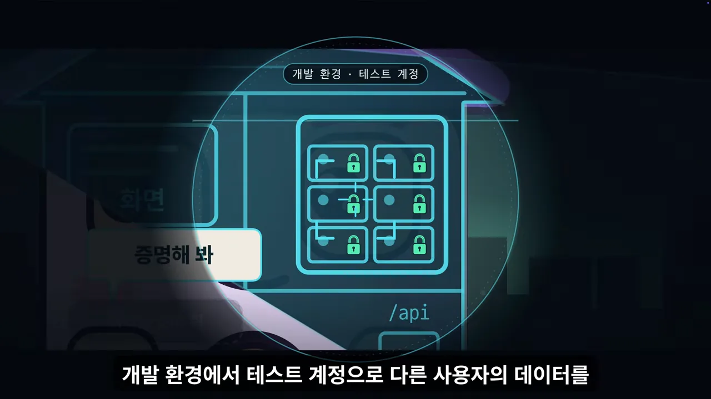
맡기기만 해서는 부족해요
처음 질문, 'Claude나 GPT에게 맡기기만 하면 되느냐'에 대한 영상의 답은 '그것만으론 부족하다'예요. 그렇다고 바이브 코딩을 멈추자는 게 아니에요. 안전장치를 같이 켜자는 거예요. 마지막 화면은 네 아이콘(권한, 비밀키, 업데이트, 에이전트·패키지) 아래에 오늘 본 사고 꼬리표(RLS 없음, 키 노출, 패치 지연)를 하나씩 매달아요.
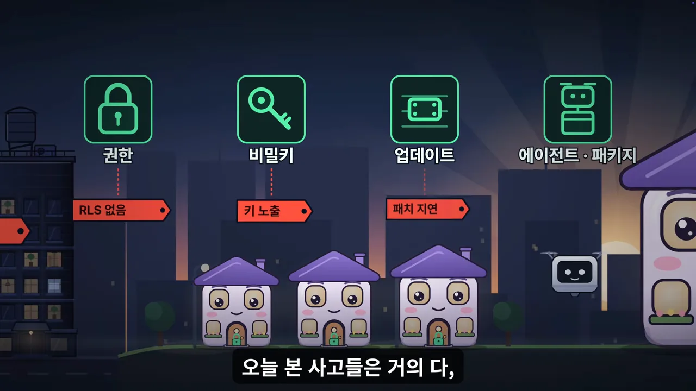
AI가 구멍을 찾는 속도가 빨라진만큼 우리가 문을 잠그는 속도도 조금 더 빨라져야 할 때입니다.
— 영상 13:56